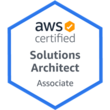

Glaucius Djalma Pereira Junior
Compentências centrais
Liderança / Trabalho em equipe / Competitivo / Empreendedor / Bussiness Driven / Arrojado
História Profissional
Arquiteto de Soluções / Consultor de negócios / Pré Venda
Atuando como arquiteto sênior de soluções de infra estrutura on premises e clouds públicas e privadas. Responsável por definir arquitetura e design para implementação de ambientes hibridos, on premises e clouds públicas/privadas, ambientes de alta complexidade e que exigem alta dispobibilidade, disaster recovery e performance adequada e elástica.
Projetos envolvidos:
Alguns projetos e impactos no negócio do cliente que houve envolvimento e participação.
- Atuação como arquiteto em design de solução 100% PCI em clouds públicas (AWS) e datacenter tradicional, transações online e malha jobs de processadora de cartões do mercado Brasileiro.
- Migração de workloads de empresa de logística de exportação e importação para clouds públicas.
Tecnologias e frameworks envolvidos::
- Ambientes complexos
- Alta disponibilidade
- Performance
- Excelência operacional
- IaaS/PaaS/FaaS
- Infra como código
- Automação
- Event Driven
- Serverless
- Arquitetura e design de ambientes
Especialista de TI - Projetos e delivery
Atuando como responsável pela condução de projetos de tecnologia de clientes. Ambientes de alta disponibilidade e performance. Responsável pelo gerenciamento de recursos e pessoas de projetos.
Projetos envolvidos:
Alguns projetos e impactos no negócio do cliente que houve envolvimento e participação.
- Liderança técnica e de implementação de plataforma de ecommerce de operadora de cartões de crédito e débito líder em marketshare no Brasil, ambiente datacenter tradicional de alta disponibilidade e performance, envolvendo tecnologias de replicação de dados e de continuidade de negócio (DR), e outras diferentes tecnologias de ponta.
- Liderança técnica e de implementação de projeto de migração e transição de ambiente SAP para cloud pública de grande indústria internacional de fertilizantes. Workloads em sites remotos e on premises para AWS, migração de workloads do cliente para núvem AWS, envolvendo tecnologias como EC2, Double Take, Direct Connect, S3, bancos de dados Oracle, Hana e ambientes SAP.
- Liderança técnica e de implementação de ambitente Data Lake em cloud pública para cliente do mercado financeiro. Projeto envolvendo produtos e serviços AWS, como EC2, S3, Direct Connect e deploy de EC2 para produtos de bigdata, como Hadoop, Spark e tecnologias para processamento de dados.
Tecnologias e frameworks envolvidos:
- Scrum
- PMI
- Virtualização
- Clouds Públicas/Privadas
- Automação e monitoração
- Datacenter On premises
- Redes/Segurança
- Storage/Data Protection
Gestor de Operações
Atuando como responsável pela gestão de operação do negócio. Relacionamento com clientes e coordenação de projetos on-line.
Tecnologias e frameworks envolvidos:
- PHP
- MySQL/PgSQL
- Ruby on Rails
- Wordpress
- OpenCart
Gestor de Ecommerce
Gestão de plataforma e-commerce, definição de processos online, interface com equipe de negócios. Empresa do grupo CVC.
Tecnologias e frameworks envolvido:
- Java
- Automação
- Gestão de requisitos
- Agile
- Scrum
Gestão de Infra Estrutura Corporativa
Responsável pela infra-estrutura corporativa do grupo, gerência de processos, equipe, projetos e garantia de disponibilidade de ambientes de produção. Líder de equipe e de projetos, com participação ativa no dia-a-dia da TI e da empresa, envolvimento em projetos estratégicos para o negócio e expansão do grupo seguindo padrões de mercado (Itil, Cobit, PMO) e de empresas S/A (Sarbanes Oxley) .
Tecnologias e frameworks envolvido:
- PMI
- ITIL
- Cobit
- PMO
- Gestão
Administrador Sênior de DataCenter Corporativo
Administrador de datacenter corporativo do grupo, redes e sistemas linux/unix/ windows(2000/2003), ambientes de storage HP, Dell e EMC2, infra estrutura de firewall (OpenBSD, Cisco ASA, Linux).
Tecnologias e frameworks envolvido:
- Cisco CCNA
- Network TCP/IP, DNS, DHCP, VPN
- Firewals BSD PF, Iptables
- Linux/Unix
- Cluster/Virtualização
- Datacenter/Storage/Backup
Administrador Sênior de Redes e Sistemas Linux/Unix
Atuando diretamente na administração da rede (intranet/internet), desenvolvimento de soluções baseadas em web para administração do provedor, configuração/instalação de servidores de email, DNS, www, bridges e roteadores baseados em sistema operacional. Desenvolvimento de soluções para diminuição da inadimplência dos usuários/clientes.
Tecnologias e frameworks envolvido:
- Correio
- Webservers
- Firewall
- Redes e roteamento
- Unix/Linux services
Skills & Ferramentas
Certificações
- AWS Solutions Architect Associate


Infra estrutura TI
-
Clouds Públicas/privadas
-
Ambientes On premises
-
Virtualização de ambientes
-
Design e arquitetura de ambientes
-
AWS / GCP / Azure
-
Cybersecurity
-
Firewall/IDS/IPS
-
Serviços de rede
-
Automação e monitoração
-
Storage/Data Protection
Software e aplicações
-
PHP
-
Bash e shell script
Others
- DevOps
- Terraform
- Git
- Ansible
- Cloud Formation
- Jenkins
- Rundeck
- Linux
Formação acadêmica
-
Engenharia de SoftwareUnicesumar - Em curso, EAD.2016 - 2020
-
MBA - Gestão de negóciosAnhanguera2011 - 2011
-
Administração de EmpresasUNIP - Alphaville2004 - 2009
Idiomas
- Portugues (Nativo)
- Inglês (Profissional)
- Espanhol (Avançado)
Interesses
- Corridas
- Código Livre (FSF)
- Cozinhar